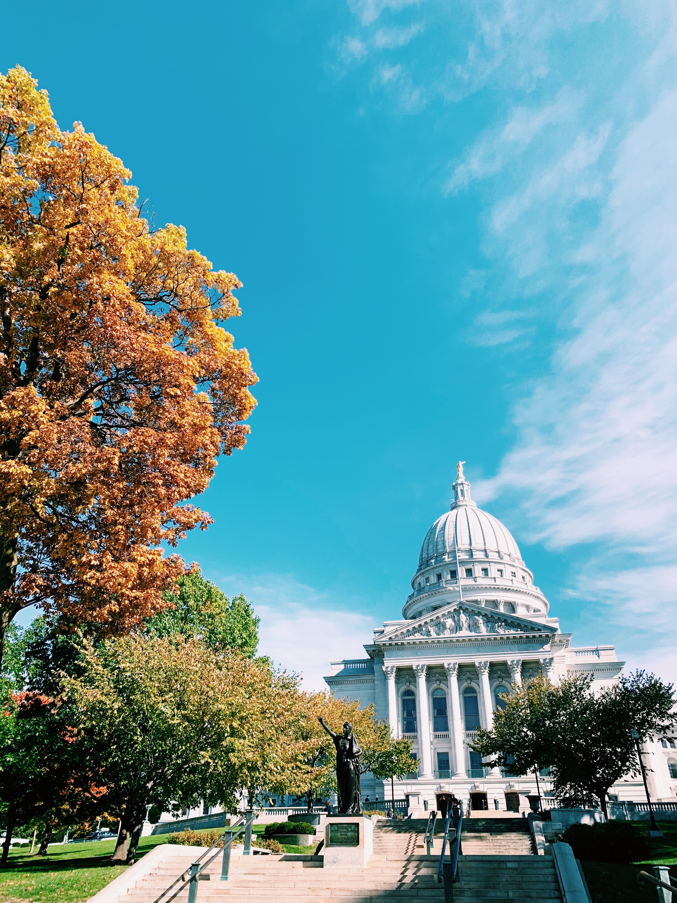

The Wisconsin State Capitol houses both chambers of the Wisconsin legislautre as well as the Wisconsin Supreme Court. The Capitol is located at the heart of the city where it is surrounded by a beautiful grassy area for sitting, and an endless list of delicious restuaraunts.
The interior of the capitol replicates ornate marble work similar to that of a French or Italian-styled building. Inside of the capitol, there are a number of historical images and murals as well as a skylight dome. The grassy patches surrounding the capitol are perfect for sitting down to relax or even enjoy a picnic!
